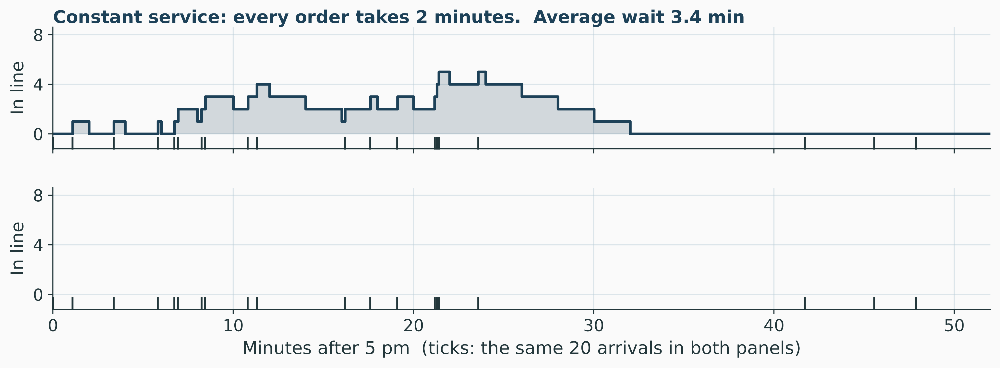
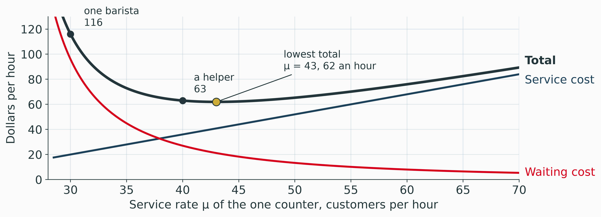
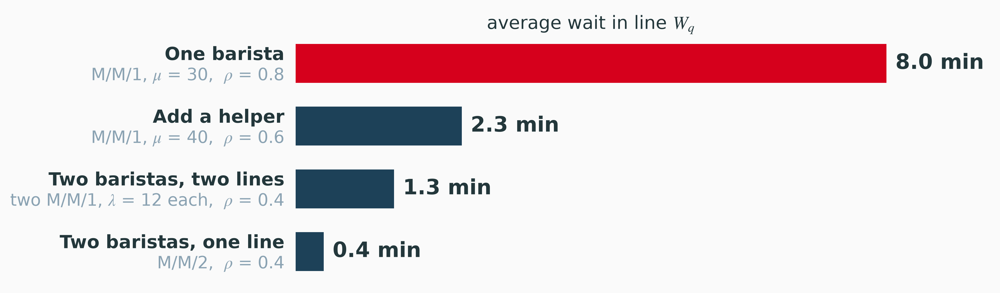
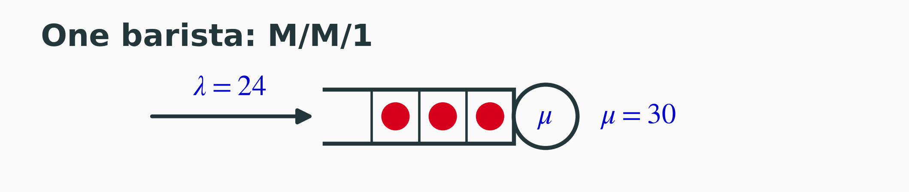
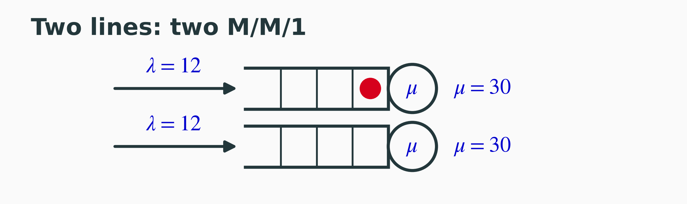
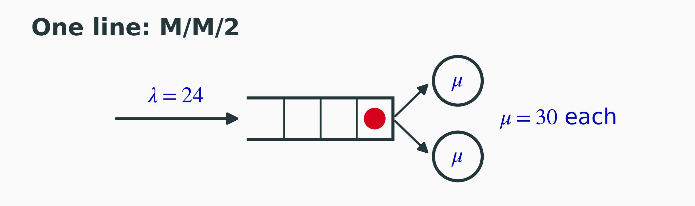

Waiting Lines Analysis
Utilization, Variability and the Cost of Waiting
Sebastian Souyris
MGMT 4100 Fall 2026
Roadmap
\[ \newcommand{\argmax}{\operatorname*{argmax}} \newcommand{\argmin}{\operatorname*{argmin}} \newcommand{\E}{\operatorname{\mathbb{E}}} \newcommand{\Var}{\operatorname{Var}} \newcommand{\Cov}{\operatorname{Cov}} \newcommand{\Corr}{\operatorname{Corr}} \newcommand{\plim}{\operatorname{plim}} \newcommand{\tr}{\operatorname{tr}} \newcommand{\rank}{\operatorname{rank}} \newcommand{\N}{\mathcal{N}} \newcommand{\R}{\mathbb{R}} \newcommand{\iid}{\overset{\text{i.i.d.}}{\sim}} \newcommand{\inprob}{\xrightarrow{\;p\;}} \newcommand{\indist}{\xrightarrow{\;d\;}} \newcommand{\eps}{\varepsilon} \newcommand{\bm}[1]{\boldsymbol{#1}} \]
Waiting Lines: Elements and Networks
The Coffee Counter at 5 pm peak

Photo: Infrogmation of New Orleans, 2012, CC BY 2.0. In the news: drive-thru waits (Lucas 2023); lines at EV fast chargers (Badalian 2023).
Predict
- Average wait in line before ordering?
(a) none
(b) about 1 minute
(c) about 8 minutes
(d) about 20 minutes
- Average number in line?
(a) 0
(b) 1
(c) 3
(d) 10
The Elements of a Queue

- \(L\), \(L_q\): average number in the system, in the queue.
- \(W\), \(W_q\): average time in the system, in the queue.
- Kendall’s notation, arrivals process/service process/ number of servers:
- D for deterministic,
- M for Markovian (random) (special case, very useful, time between events is independent)
- Example: M/M/1.
A Network of Waiting Lines: An Emergency Department
Patients arrive on foot or by ambulance. Every stage is a server with a line.

Seven servers, seven lines. Each needs the model this session builds: one line, one server.
Why Lines Form: Utilization and Variability
One Server - The counter opens empty at 5 pm - simulated
- Deterministic: time between events is the same.
- Markovian: time between events is random, exponentially distributed times with the same average.
Show code
Show code
Show code
// Five controls in one form, so the cells below read one name. The grid
// is the gallery's .rpi-controls with a third column for the button; the
// labels are short, so they get 100px. Observable sizes a control with
// two variables on its form, --label-width (120px) and --input-width
// (240px); at 240 the radios' two options (131 + 107px, plus 10px
// margins) stacked "Markovian" under "Deterministic", and neither a
// width rule on the option box nor the radio's `width` option changed
// that [measured, headless Chrome]. Setting the variables does.
viewof simIn = Inputs.form(
{
lam: Inputs.range([6, 36], {value: 24, step: 1, label: "λ per hour"}),
mu: Inputs.range([10, 40], {value: 30, step: 1, label: "μ per hour"}),
arr: Inputs.radio(["Deterministic", "Markovian"], {value: "Deterministic", label: "Arrivals:"}),
svc: Inputs.radio(["Deterministic", "Markovian"], {value: "Deterministic", label: "Service:"}),
draw: Inputs.button("New draw")
},
{ template: (i) => htl.html`<div class="rpi-controls rpi-sim">
<style>
.reveal .rpi-controls.rpi-sim { grid-template-columns: 1fr 1fr auto; align-items: center; }
.reveal .rpi-controls.rpi-sim form { --label-width: 100px; --input-width: 270px; }
.reveal .rpi-controls.rpi-sim form > label { min-width: 100px; }
</style>
${i.lam}${i.mu}<span></span>${i.arr}${i.svc}${i.draw}</div>` }
)Show code
// One evening. Gaps and service times from the uniforms by the inverse
// transform, or the exact averages; then each wait from the departure
// before it. The line steps up when a customer who must wait arrives and
// down when that customer's service starts; at equal times the step down
// comes first, and events less than 1e-9 minutes apart share one point:
// as separate points, zero-width steps cut a white notch in the area
// fill at lambda 36 [observed].
sim = {
const {lam, mu, arr, svc, draw} = simIn;
const d = draw % simU.arr.length, ua = simU.arr[d], us = simU.svc[d], H = simU.H;
const t = [];
let clock = 0;
for (let k = 0; k < ua.length; k++) {
clock += arr === "Markovian" ? -Math.log(1 - ua[k]) * 60 / lam : 60 / lam;
if (clock >= H) break;
t.push(clock);
}
const wait = [], start = [];
let free = 0;
t.forEach((tk, k) => {
const sk = svc === "Markovian" ? -Math.log(1 - us[k]) * 60 / mu : 60 / mu;
let w = Math.max(0, free - tk);
if (w < 1e-9) w = 0;
wait.push(w);
start.push(tk + w);
free = tk + w + sk;
});
const ev = [];
t.forEach((tk, k) => { if (wait[k] > 0) { ev.push([tk, 1]); ev.push([start[k], -1]); } });
ev.sort((a, b) => a[0] - b[0] || a[1] - b[1]);
let n = 0, longest = 0;
const steps = [{t: 0, n: 0}];
for (const [x, dn] of ev) {
if (x >= H) break;
n += dn;
const last = steps[steps.length - 1];
if (x - last.t < 1e-9) last.n = n; else steps.push({t: x, n});
longest = Math.max(longest, n);
}
steps.push({t: H, n});
return {d, t, steps, longest, N: t.length, rho: lam / mu,
Wq: t.length ? d3.mean(wait) : 0,
waited: t.length ? wait.filter(w => w > 0).length / t.length : 0};
}Show code
Plot.plot({
...frame,
// marginTop 28: at 16 the y label overprinted the 20 tick [observed].
// 286, from 296: the readout under the plot sat 1px into the footline
// [check-layout, 2026-11-09].
height: 286,
marginTop: 28,
x: {label: "Minutes after 5 pm (ticks: arrivals) →", domain: [0, 120],
ticks: d3.range(0, 121, 15)},
y: {label: "↑ Customers in line", domain: [-1.8, 20], ticks: [0, 5, 10, 15, 20], grid: true},
marks: [
Plot.areaY(sim.steps, {x: "t", y: "n", curve: "step-after", fill: rpi.red,
fillOpacity: 0.16, clip: true}),
Plot.line(sim.steps, {x: "t", y: "n", curve: "step-after", stroke: rpi.red,
strokeWidth: 2.2, clip: true}),
Plot.ruleX(sim.t, {y1: -1.6, y2: -0.5, stroke: rpi.ink, strokeWidth: 1.1}),
Plot.ruleY([0], {stroke: rpi.ink}),
Plot.text([`evening ${sim.d + 1} of ${simU.arr.length}`], {frameAnchor: "top-right",
dx: -4, dy: 4, fill: rpi.ink, fontSize: 12})
]
})Show code
htl.html`<div class="rpi-readout">
ρ = λ/μ =<b>${sim.rho.toFixed(2)}</b> · ${sim.N} customers
· average wait in line <b>${sim.Wq.toFixed(1)} min</b>
· longest line ${sim.longest}
· ${Math.round(100 * sim.waited)}% waited
${sim.rho >= 1 ? htl.html` · <b style="color: ${rpi.red}">λ ≥ μ</b>` : ""}</div>`What the Simulator Showed
- Everything regular: the barista is busy 80% of the time and nobody waits. The idle 20% comes in half-minute gaps between customers.
- Random service: a long order makes the customers behind it wait.
- Random arrivals too: customers bunch, and the line grows longer.
- \(λ\) above \(μ\): the line grows all evening, even with no randomness at all.
Two causes, both needed
A line forms from utilization \(\rho = \lambda / \mu\), the fraction of time the server is busy, and variability, how irregular arrivals and service are. Idle minutes are lost: a barista idle at 5:03 cannot serve the customer who arrives at 5:10.
Little’s Law
The one law that holds for every queue in steady state, whatever the distributions and however many servers (Little 1961):
\[ L = \lambda W \qquad\qquad L_q = \lambda W_q \]
Check it at the coffee counter
\(\lambda = 24\) an hour and \(W = 10\) minutes \(= 1/6\) hour (the worked slides), so \(L = 24 \times 1/6 = 4\) customers in the system.
The Single-Server Model (M/M/1)
The M/M/1 Model Assumptions
- Poisson arrivals: mean \(\lambda\) per unit time, standard deviation \(\sqrt{\lambda}\); exponential gaps, mean \(1/\lambda\)
- Exponential service at rate \(\mu\), mean \(1/\mu\), standard deviation also \(1/\mu\)
- Infinite calling population,
- first-come
- first-served,
- unlimited line.
- \(\lambda < \mu\)
Arrivals in a unit of time
\(\displaystyle P(x) = \frac{\lambda^{x} e^{-\lambda}}{x!} \qquad x = 0, 1, 2, \ldots\)
Service time \(T\)
\(\displaystyle P(T \le t) = 1 - e^{-\mu t} \qquad t \ge 0\)
Markovian means memoryless
The next arrival is always \(1/\lambda\) away on average.
The Formula Set
| Probability that the server is busy (utilization) | \(U = \dfrac{\lambda}{\mu}\) |
| Probability that the server is idle | \(I = 1 - U = 1 - \dfrac{\lambda}{\mu}\) |
| Probability that no customers are in the system | \(P_0 = 1 - \dfrac{\lambda}{\mu}\) |
| Probability that \(n\) customers are in the system | \(P_n = \left(\dfrac{\lambda}{\mu}\right)^{n} P_0\) |
| Average number of customers in the system | \(L = \dfrac{\lambda}{\mu - \lambda}\) |
| Average number of customers in the waiting line | \(L_q = \dfrac{\lambda^2}{\mu(\mu - \lambda)}\) |
| Average time a customer spends waiting and being served | \(W = \dfrac{1}{\mu - \lambda} = \dfrac{L}{\lambda}\) |
| Average time a customer spends waiting in the queue | \(W_q = \dfrac{\lambda}{\mu(\mu - \lambda)}\) |
The Coffee Counter, Worked (1 of 2)
M/M/1 system, \(\lambda = 24\) customers an hour; \(\mu = 60/2 = 30\) customers an hour.
\[ \hphantom{L_q}\llap{U} \;=\; \rlap{\dfrac{\lambda}{\mu} = \dfrac{24}{30} = 0.8}\hphantom{\dfrac{\lambda^2}{\mu\,(\mu - \lambda)} = \dfrac{24^2}{30\,(30 - 24)} = \dfrac{576}{180} = 3.2} \]
\[ \hphantom{L_q}\llap{P_0} \;=\; \rlap{1 - \dfrac{\lambda}{\mu} = 1 - \dfrac{24}{30} = 0.2}\hphantom{\dfrac{\lambda^2}{\mu\,(\mu - \lambda)} = \dfrac{24^2}{30\,(30 - 24)} = \dfrac{576}{180} = 3.2} \]
\[ \hphantom{L_q}\llap{L} \;=\; \rlap{\dfrac{\lambda}{\mu - \lambda} = \dfrac{24}{30 - 24} = \dfrac{24}{6} = 4}\hphantom{\dfrac{\lambda^2}{\mu\,(\mu - \lambda)} = \dfrac{24^2}{30\,(30 - 24)} = \dfrac{576}{180} = 3.2} \]
\[ L_q \;=\; \dfrac{\lambda^2}{\mu\,(\mu - \lambda)} = \dfrac{24^2}{30\,(30 - 24)} = \dfrac{576}{180} = 3.2 \]
- The barista is busy 80% of the time.
- One customer in five finds the counter empty.
- Of 4 in the system, 3.2 are in line; \(L - L_q = 0.8\) is the one in service, on average.
The Coffee Counter, Worked (2 of 2)
\[ \hphantom{W_q}\llap{W} \;=\; \rlap{\dfrac{1}{\mu - \lambda} = \dfrac{1}{30 - 24} = \dfrac{1}{6} \text{ hour} = \textcolor{#D6001C}{\mathbf{10} \textbf{ min}}}\hphantom{\dfrac{\lambda}{\mu\,(\mu - \lambda)} = \dfrac{24}{30\,(30 - 24)} = 0.133 \text{ hour} = \mathbf{8} \textbf{ min}} \]
\[ W_q \;=\; \dfrac{\lambda}{\mu\,(\mu - \lambda)} = \dfrac{24}{30\,(30 - 24)} = 0.133 \text{ hour} = \textcolor{#D6001C}{\mathbf{8} \textbf{ min}} \]
\[ \hphantom{W_q}\llap{I} \;=\; \rlap{1 - U = 1 - 0.8 = 0.2}\hphantom{\dfrac{\lambda}{\mu\,(\mu - \lambda)} = \dfrac{24}{30\,(30 - 24)} = 0.133 \text{ hour} = \mathbf{8} \textbf{ min}} \]
\[ \hphantom{W_q}\llap{P_3} \;=\; \rlap{\left(\dfrac{\lambda}{\mu}\right)^{3} P_0 = 0.8^3 \times 0.2 = 0.102}\hphantom{\dfrac{\lambda}{\mu\,(\mu - \lambda)} = \dfrac{24}{30\,(30 - 24)} = 0.133 \text{ hour} = \mathbf{8} \textbf{ min}} \]
Three checks
- \(W = W_q + 1/\mu\): \(8 + 2 = 10\) min
- \(L = \lambda W\): \(24 \times 1/6 = 4\)
- \(L_q = \lambda W_q\): \(24 \times 0.133 = 3.2\)
Units: The Commonest Error
μ is a rate
“2 minutes an order” is \(\mu = 60/2 = 30\) an hour. \(\mu = 2\) is the error.
- Put \(\lambda\) and \(\mu\) in the same unit, per hour, before any formula.
- \(W\) and \(W_q\) then come out in hours. Multiply by 60 for minutes: \(W_q = 0.133 \text{ hour} = 8\) minutes.
- \(L\) and \(L_q\) are counts and carry no time unit.
Read the question
“How many are waiting?” asks for \(L_q = 3.2\). “How many are at the counter?” asks for \(L = 4\). The two differ by the customer in service.
The Hockey Stick
The formula sheet’s \(W_q\) is \(\rho/(1 - \rho) \times 1/\mu\). Drag the arrival rate; the barista still serves 30 an hour. Dashed: M/D/1, every order exactly 2 minutes.
Show code
Show code
Show code
Plot.plot({
...frame,
height: 262,
x: {label: "Utilization ρ = λ/μ →", domain: [0, 1], grid: true},
y: {label: "↑ Average wait in line Wq, minutes", domain: [0, 60], grid: true},
marks: [
Plot.line(uc.curve, {x: "rho", y: d => d.wq / 2, stroke: rpi.blue,
strokeDasharray: "6 4", strokeWidth: 1.8}),
Plot.line(uc.curve, {x: "rho", y: "wq", stroke: rpi.red, strokeWidth: 2.8}),
// Below the dashed curve and right of today's ring: at (0.9, 9),
// anchored at its end, the label ran into the ring [observed].
Plot.text([{rho: 0.84, wq: 5.25}], {x: "rho", y: "wq", text: () => "M/D/1",
fill: rpi.blue, fontSize: 12, textAnchor: "start", dy: 14}),
Plot.text([{rho: 0.9, wq: 18}], {x: "rho", y: "wq", text: () => "M/M/1",
fill: rpi.red, fontSize: 12, fontWeight: 600, textAnchor: "end", dx: -10, dy: -8}),
Plot.dot([uc.today], {x: "rho", y: "wq", r: 7, stroke: rpi.ink, strokeWidth: 1.6, fill: "none"}),
Plot.ruleX([ucNow.rho], {stroke: rpi.ink, strokeOpacity: 0.45}),
Plot.dot([ucNow], {x: "rho", y: "Wq", r: 6, fill: rpi.red}),
Plot.text([ucNow], {x: "rho", y: "Wq", text: d => `${d.Wq.toFixed(1)} min`,
dx: -10, dy: -12, textAnchor: "end", fill: rpi.ink, fontWeight: 600, fontSize: 13,
stroke: rpi.paper, strokeWidth: 4, paintOrder: "stroke"})
]
})Show code
htl.html`<div class="rpi-readout">
λ = ${ucNow.lam.toFixed(1)} an hour · ρ = <b>${ucNow.rho.toFixed(2)}</b>
· L<sub>q</sub> = ${ucNow.Lq.toFixed(2)}
· W<sub>q</sub> = <b>${ucNow.Wq.toFixed(1)} min</b>
· W = ${ucNow.W.toFixed(1)} min · P<sub>0</sub> = ${ucNow.P0.toFixed(2)}</div>`The last few points of utilization are the expensive ones. From \(\rho = 0.8\) to \(0.9\) is 3 more customers an hour, and the wait goes from 8 to 18 minutes.
Reducing the Wait: Capacity and Pooling
Four Ways to Staff the Counter
\(\lambda = 24\) customers an hour. Each option is a different queuing model.

More capacity lowers \(\rho\), and \(\rho/(1-\rho)\) magnifies the drop. At the same \(\rho\), one shared line waits least (M/M/2, from Queue_Calculator.xlsx).
More Capacity, Worked: A Helper

\[ \begin{array}{r@{\;=\;}l} \rho & \dfrac{\lambda}{\mu} = \dfrac{24}{30} = 0.8 \\[3pt] L_q & \dfrac{\lambda^2}{\mu\,(\mu - \lambda)} = \dfrac{24^2}{30 \times 6} = 3.2 \\[3pt] W_q & \dfrac{L_q}{\lambda} = \dfrac{3.2}{24} \text{ h} = 8 \text{ min} \end{array} \]
\[ \begin{array}{r@{\;=\;}l} \rho & \dfrac{\lambda}{\mu} = \dfrac{24}{40} = 0.6 \\[3pt] L_q & \dfrac{\lambda^2}{\mu\,(\mu - \lambda)} = \dfrac{24^2}{40 \times 16} = 0.9 \\[3pt] W_q & \dfrac{L_q}{\lambda} = \dfrac{0.9}{24} \text{ h} = 2.25 \text{ min} \end{array} \]
A quarter less utilization, under a third of the wait.
Two Baristas, Worked: Two Lines or One

\[ \begin{array}{r@{\;=\;}l} \rho & \dfrac{\lambda}{\mu} = \dfrac{12}{30} = 0.4 \\[3pt] L_q & \dfrac{\lambda^2}{\mu\,(\mu - \lambda)} = \dfrac{12^2}{30 \times 18} = 0.267 \\[3pt] W_q & \dfrac{L_q}{\lambda} = \dfrac{0.267}{12} \text{ h} = 1.33 \text{ min} \end{array} \]

\[ \begin{array}{r@{\;=\;}l} \rho & \dfrac{\lambda}{2\mu} = \dfrac{24}{60} = 0.4 \\[3pt] L_q & \dfrac{2\rho^3}{1 - \rho^2} = \dfrac{2 \times 0.4^3}{1 - 0.4^2} = 0.152 \\[3pt] W_q & \dfrac{L_q}{\lambda} = \dfrac{0.152}{24} \text{ h} = 0.38 \text{ min} \end{array} \]
Same \(\rho\), under a third of the wait.
Why One Line Beats Two
Same two baristas, same 24 arrivals an hour, same \(\rho = 0.4\).
Pooling
One line never leaves a barista idle while a customer waits.
In-Class Exercise: How Many Chargers?
Hudson Service Plaza at the evening peak: drivers arrive at 10 an hour (Poisson), and a charge takes 30 minutes on average (exponential). Drivers wait in one shared line for the next free charger.
Average number of drivers waiting, from the MMc sheet of Queue_Calculator.xlsx:
| Chargers \(c\) | \(L_q\) |
|---|---|
| 6 | 2.94 |
| 7 | 0.81 |
| 8 | 0.28 |
- Find \(\mu\) for one charger, per hour. Which queuing model is this?
- Find \(\rho = \lambda / (c\mu)\) for 5, 6, 7 and 8 chargers. With 5 chargers, what happens to the line over the evening, and why?
- For 6, 7 and 8 chargers, find the average wait in line \(W_q\), in minutes.
- With 6 chargers, find \(L\) and \(W\) (waiting plus charging).
- The plaza wants the average wait in line under 10 minutes. How many chargers does it need?
- How much does the 7th charger cut \(L_q\)? The 8th? Why does each added charger buy less?
Workbook: Queue_Calculator.xlsx
Download Queue_Calculator.xlsx
MM1: \(\lambda\) in B4, \(\mu\) in B5 (per hour), \(n\) in B6; the eight outputs C10:C17, times in minutes D14:D15. MMc: \(\lambda\), \(\mu\), \(c\) in B4:B6; P(wait) D28, \(L_q\) D29, \(W_q\) in minutes E31; \(c\) from 1 to 12 in rows 36 to 47. Cost: the coffee alternatives, A12:F15.
Try this
- MM1: raise \(\lambda\) in B4 from 24 to 27, then to 29. Watch \(W_q\) in D15.
- MMc: set \(\lambda = 24\), \(\mu = 30\), \(c = 2\) and check the shared line in the staffing table.
- MMc: at 11 drivers an hour, how many chargers keep \(W_q\) under 5 minutes?
Summary
Summary
Core takeaways
- Lines form from utilization and variability together; cut either and the wait falls
- Little’s law, \(L = \lambda W\), holds for every queue
- M/M/1: every measure follows from \(\lambda\) and \(\mu\)
- \(W_q\) explodes as \(\rho\) nears 1
- One shared line beats separate lines at the same \(\rho\)
- Each added server cuts the wait by less than the one before
Watch out for
- \(\mu\) is a rate, not a service time
- Times come out in hours; convert to minutes
- \(L_q\) (waiting) is not \(L\) (in the system)
- \(\lambda \ge c\mu\): no steady state
Bottom line
Lower \(\rho\) to cut the wait, and pool servers into one shared line: the same capacity then waits less.
References
The single-server and multiple-server models follow Gross et al. (2008); Little’s law is Little (1961). Pooling follows Cachon and Terwiesch (2018) and Hopp and Spearman (2008). News: Lucas (2023) and Badalian (2023).
Badalian, Vartan. 2023. “Seeking Solutions to the EV Charging Queue Problem.” Trellis, March 27. https://trellis.net/article/seeking-solutions-ev-charging-queue-problem/.
Cachon, Gérard, and Christian Terwiesch. 2018. Matching Supply with Demand. 4th ed. McGraw-Hill Education.
Gross, Donald, John F. Shortle, James M. Thompson, and Carl M. Harris. 2008. Fundamentals of Queueing Theory. 4th ed. Wiley. https://doi.org/10.1002/9781118625651.
Hopp, Wallace J., and Mark L. Spearman. 2008. Factory Physics. 3rd ed. McGraw-Hill/Irwin.
Little, John D. C. 1961. “A Proof for the Queuing Formula: \(L = \lambda W\).” Operations Research 9 (3): 383–87. https://doi.org/10.1287/opre.9.3.383.
Lucas, Amelia. 2023. “Fast-Food Drive-Thru Lanes Speed up as Fewer Drivers Wait in Line.” CNBC, October 2. https://www.cnbc.com/2023/10/02/fast-food-drive-thru-lanes-speed-up-as-fewer-drivers-wait-in-line.html.
Questions?
Waiting Lines Analysis
Appendix: Special Models
Appendix
Special Models: Not on Exam 2
Undefined Service Times (M/G/1)
Not on Exam 2
M/G/1, G for a general service distribution: Poisson arrivals, any service distribution with mean \(1/\mu\) and standard deviation \(\sigma\) (the Pollaczek–Khinchine formula):
\[ L_q = \frac{\lambda^2 \sigma^2 + (\lambda/\mu)^2}{2\,(1 - \lambda/\mu)} \qquad L = L_q + \frac{\lambda}{\mu} \qquad W_q = \frac{L_q}{\lambda} \qquad W = W_q + \frac{1}{\mu} \]
Coffee counter, orders average 2 minutes with a standard deviation of 1 minute (\(\sigma = 1/60\) hour):
\[ L_q = \frac{24^2 (1/60)^2 + 0.8^2}{2\,(1 - 0.8)} = \frac{0.16 + 0.64}{0.4} = 2.0 \qquad W_q = \frac{2.0}{24} \text{ hour} = 5 \text{ minutes} \]
\(\sigma\) appears only in \(L_q\). With \(\sigma = 1/\mu\) (exponential) the formula gives the M/M/1 answer, 3.2.
Constant Service Times (M/D/1)
Not on Exam 2
M/D/1 (D for deterministic): \(\sigma = 0\) in the formula before.
\[ L_q = \frac{(\lambda/\mu)^2}{2\,(1 - \lambda/\mu)} \]
Half the M/M/1 value: the dashed curve on The Hockey Stick.
The plaza’s automatic car wash takes exactly 5 minutes (\(\mu = 12\) an hour), and 9 cars arrive an hour:
\[ L_q = \frac{0.75^2}{2\,(1 - 0.75)} = \frac{0.5625}{0.5} = 1.125 \text{ cars} \qquad W_q = \frac{1.125}{9} \text{ hour} = 7.5 \text{ minutes} \]
Finite Queue Length
Not on Exam 2
Room for at most \(M\) customers in the system; an arrival who finds it full leaves.
\[ P_0 = \frac{1 - \lambda/\mu}{1 - (\lambda/\mu)^{M+1}} \qquad P_n = P_0 \left(\frac{\lambda}{\mu}\right)^{n},\; n \le M \qquad L = \frac{\lambda/\mu}{1 - \lambda/\mu} - \frac{(M+1)(\lambda/\mu)^{M+1}}{1 - (\lambda/\mu)^{M+1}} \]
\[ L_q = L - \frac{\lambda (1 - P_M)}{\mu} \qquad W = \frac{L}{\lambda (1 - P_M)} \qquad W_q = W - \frac{1}{\mu} \]
Here \(\lambda/\mu\) may exceed 1: the full system turns the excess away.
The coffee drive-up lane holds 5 cars, \(\lambda = 24\), \(\mu = 30\):
\[ P_0 = \frac{0.2}{1 - 0.8^6} = 0.271 \qquad P_5 = 0.271 \times 0.8^5 = 0.089 \qquad L = 1.87 \qquad W_q = 3.1 \text{ minutes} \]
\(24 \times 0.089 = 2.1\) cars an hour find the lane full and drive on.
Finite Calling Population
Not on Exam 2
A pool of only \(N\) possible customers, each arriving at rate \(\lambda\) while it is outside the system:
\[ P_0 = \left[\, \sum_{n=0}^{N} \frac{N!}{(N-n)!}\left(\frac{\lambda}{\mu}\right)^{n} \right]^{-1} \qquad L_q = N - \frac{\lambda + \mu}{\lambda}(1 - P_0) \qquad L = L_q + (1 - P_0) \]
\[ W_q = \frac{L_q}{(N - L)\,\lambda} \qquad W = W_q + \frac{1}{\mu} \]
The plaza’s 6 chargers each fail once every 100 operating hours on average (\(\lambda = 0.01\) an hour); one technician repairs one in 5 hours on average (\(\mu = 0.2\) an hour):
\[ P_0 = 0.718 \qquad L_q = 6 - \frac{0.21}{0.01}(1 - 0.718) = 0.081 \qquad L = 0.363 \qquad W_q = 1.4 \text{ hours} \]
On average \(6 - 0.363 = 5.64\) chargers are working. A broken charger waits 1.4 hours for the technician, then 5 hours for the repair.